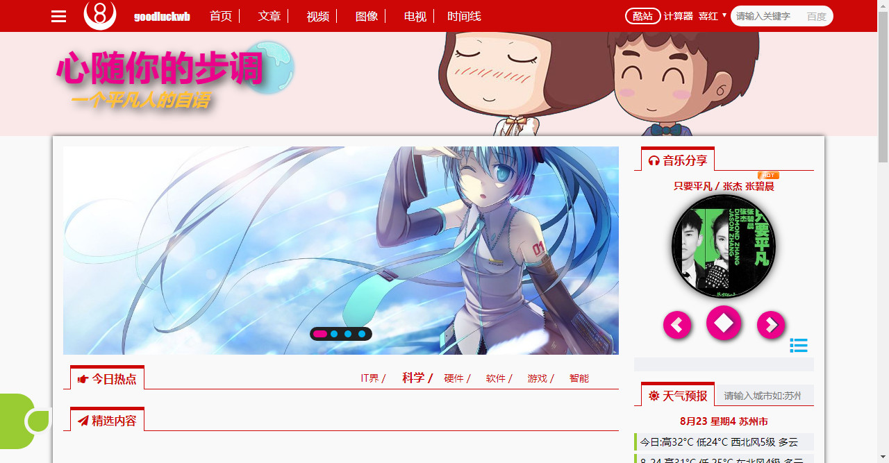
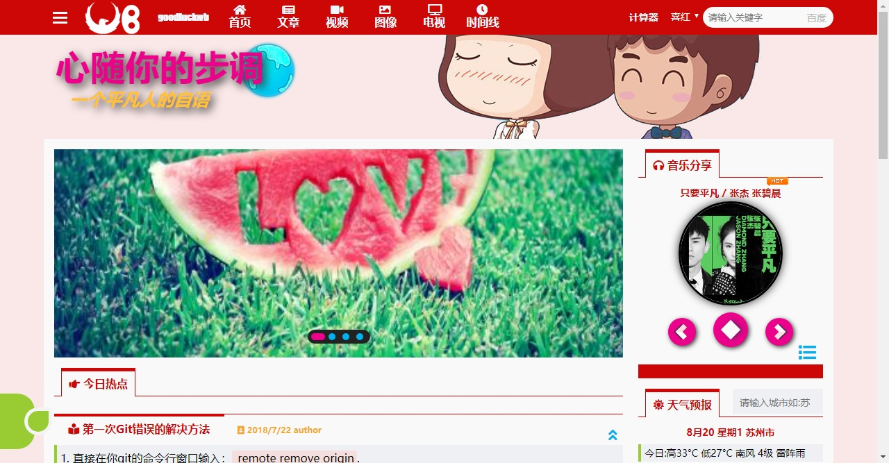
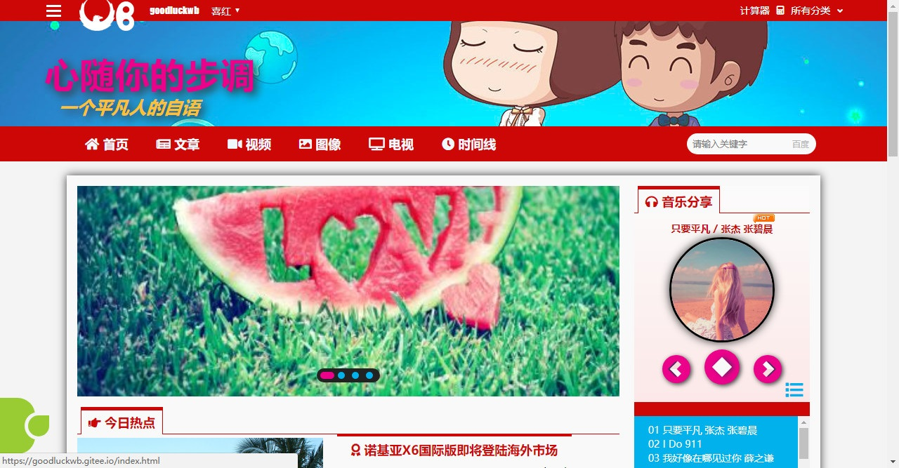

项目设计&开发大事件
开发历程 9月8日
重写了音乐播放器的逻辑.增加首页的视频点击弹出窗口播放.
开发历程 9月6日
增加了文章分页切换,增加了图片全屏放大预览切换.
开发历程 9月2日
用react重写了复用代码.但是babel的页面转换效果很差.
开发历程 8月31日
完善视频和电视两大板块,以及html5和flash播放器的调用逻辑. 其他细节调整.
开发历程 8月25日
细节调整,重构图片页面为瀑布流.
开发历程 8月23日
继续调整版面协调性,增加热点切换. 
开发历程 8月22日
增加酷站弹出式导航.更换logo.
开发历程 8月20日
音乐盒循环播放与封面切换,再次大幅调整版面结构.双导航条合并为一个顶部导航. 
开发历程 8月17日
增加音乐盒进度条,播放列表和封面旋转.增加各种小图标.调整各主题颜色搭配. 
开发历程 8月15日
增加颜色主题选项,自由切换.
开发历程 8月14日
更改音乐盒音乐源.搭建主菜单框架.
开发历程 8月13日
优化天气预报接口,现在可以直接输入城市名进行查询.
开发历程 8月12日
优化股票显示,可以区分颜色.增加天气预报接口.
开发历程 8月11日
js编写音乐盒部分.更改主题颜色为暗色调.添加股票接口.
开发历程 8月10日
增加文章折叠和展开代码,并测试AJAX工作状态.搜索暂时指定到百度.
开发历程 8月9日
继续优化各个页面布局,去掉阴影和渐变背景,力求简洁.增加最外层黑色背景,眼睛看上去舒适些.
开发历程 8月8日
今天加入了这个时间线,有BUG,目前响应式设计不完善,窗口变化图标会错位^_*, 后续努力改进.
开发历程 8月7日
更新到v1.14版本,完善首页图片轮播代码,变更了颜色搭配.
开发历程 8月3日
增加一个小计算器,更改子菜单弹出动画和Totop弹出提示.
开发历程 7月28日
增加了电视,方便自己观看体育频道*_*,增加块元素的阴影效果.更改 标题栏效果.
开发历程 7月22日
这是我的第一个网页开发,希望以后继续保持,开发更多更好的作品. 我的作品地址:
goodluckwb.github.io
goodluckwb.gitee.io
这2个地方更新.